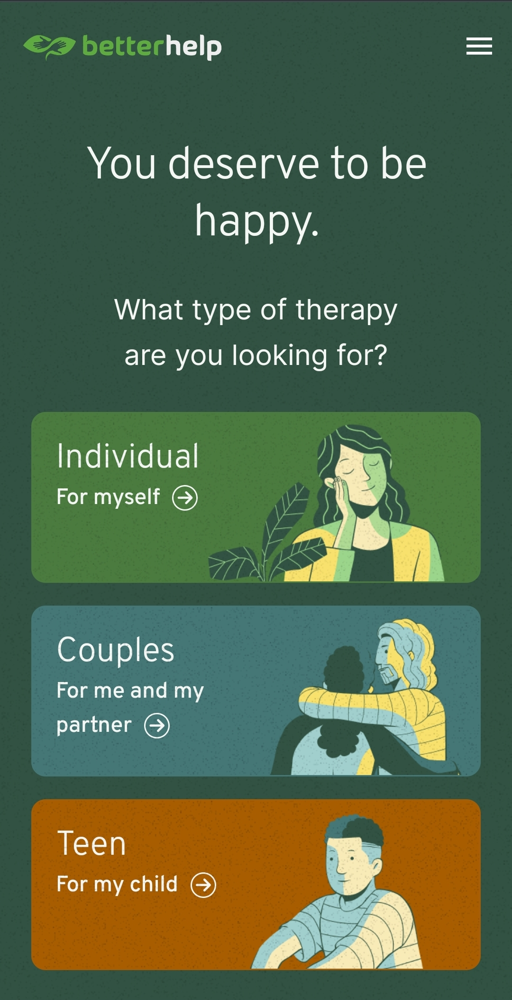
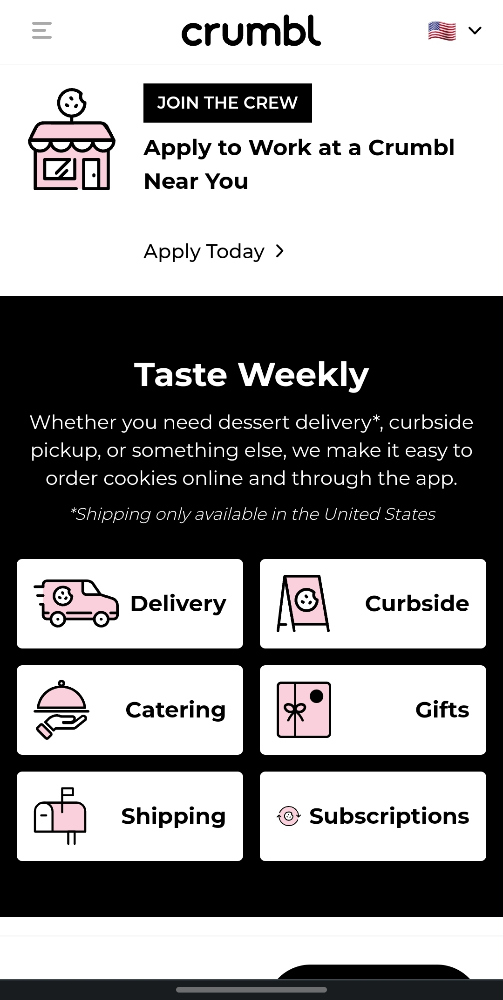

Rule of Thirds
Better Help
The Better Helpwebsite is a realy well done example of the rule of thirds. If you were to put a 3x3 grid on this website and follow it all the way down, you would notice that almost every itme fits somewhere in a third. This makes the website easier to take in and more inviting.
Contrast
Crumbl Cookies
The Crumbl website isn't only good for cookies, it is also a great example of contrast. Contrast is essential in a website for not only catching soemones eye but for simplifying a web page. Crumbl does a great job in creating an easy to read and inviting website. Enjoy your cookies!
Hick's Law
BarberPop Shop
The BarberPop Shop does well in the aspect of Hick's Law which is that the more content you have, the less likely someone is going to make a decision or stick around. A simple yet clear website depicting exactly what you want your customers or consumers to see on your web page and BarberPop Shop's website does it well.